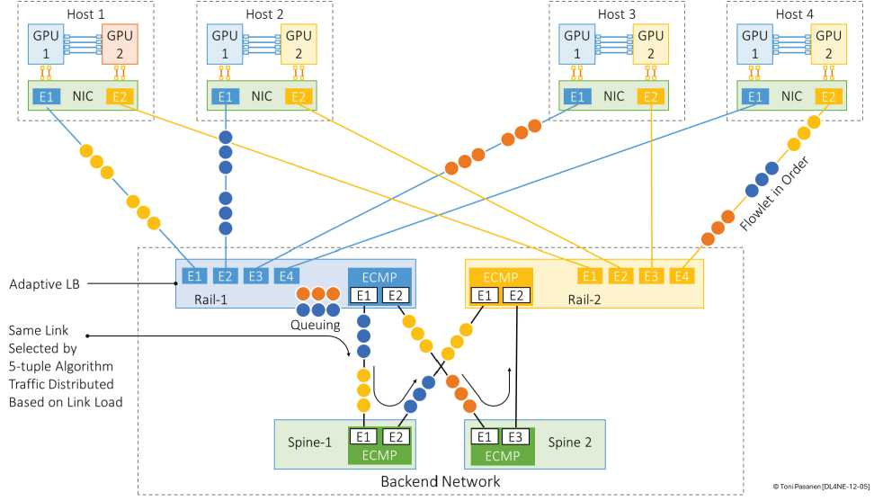
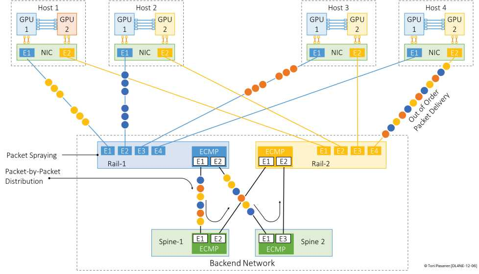

流内若出现空隙（>阈值），后段可换路（自适应路由），既保序（间隙够大，下游已 drain）又均衡。优点改动小、兼容 ECMP；缺点阈值难调，AI 线速流间隙小，机会少。书 p284。
每包独立选路（轮询/负载感知），均衡极致，充分利用所有 Spine。代价乱序，需网卡/端点重排（PSN 重组 buffer），对 lossless + 重排能力要求高。AI 后端最爱：大象流被打碎，多路径并行。书 p286-287 + Nexus 每包配置 p289。
通用云 Flow 足矣；AI 训练 Flowlet 是过渡，喷洒是归宿。配置注意：喷洒必须全路径 MTU/ECN 一致 + 端点重排使能，否则乱序变丢包。


对比表：Flow / Flowlet / 喷洒（粒度/保序/均衡/代价）。